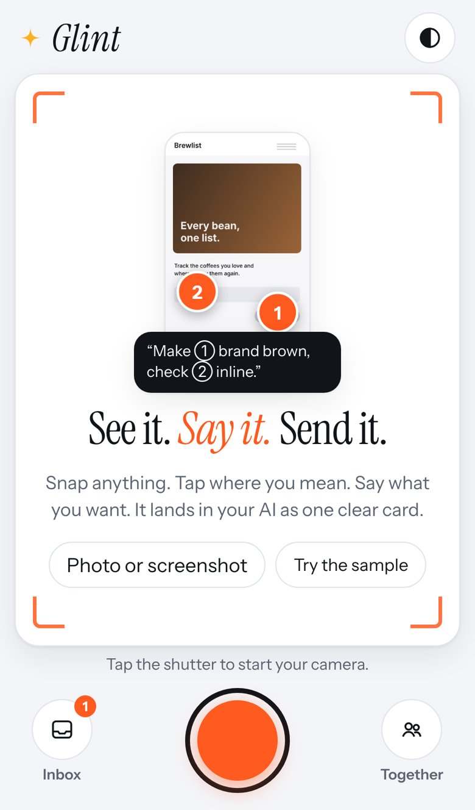
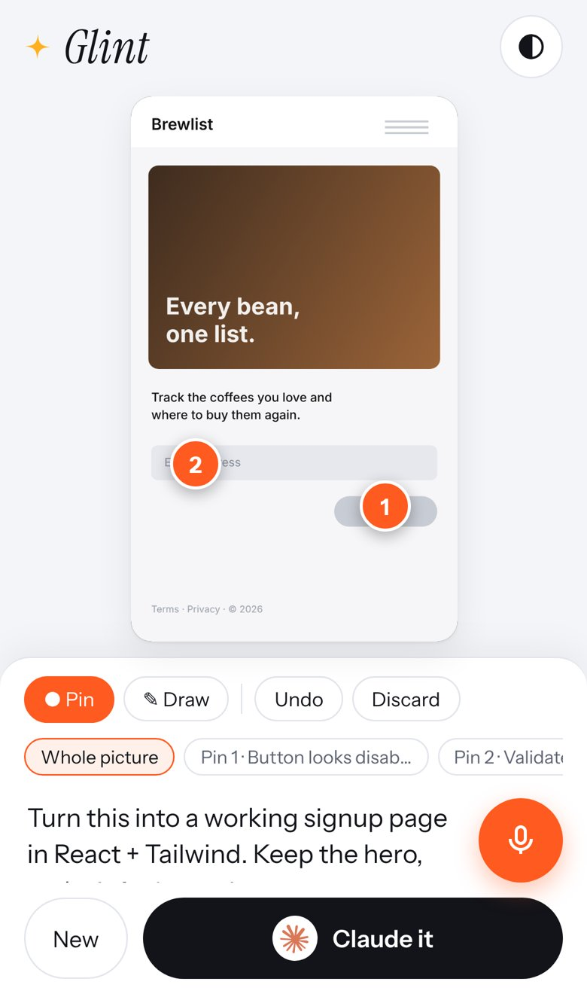
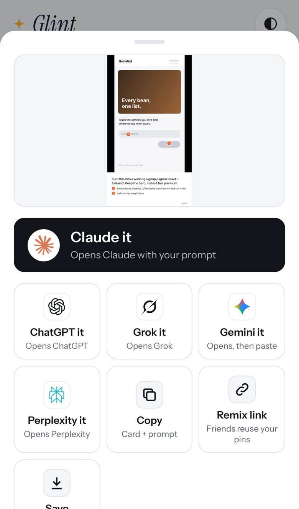
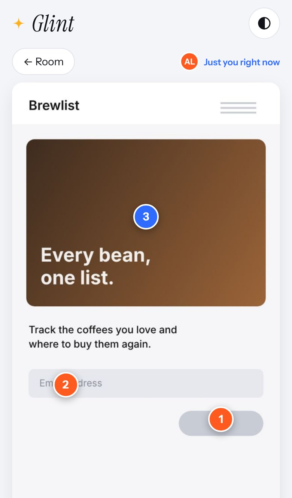

<title>Glint Product Brief</title>
<meta name="claude:viewport-fit-sides" content="cover">
<link rel="stylesheet" href="https://fonts.googleapis.com/css2?family=Instrument+Sans:wght@400;500;600;700&family=Instrument+Serif:ital@0;1&display=swap">
<style>
/* Layout: one readable column (~68ch) with wider bands for screenshots and the film. Light-first, like the app. */
:root{
  --bg:#f4f5f8; --surface:#ffffff; --fg:#12141a; --muted:#5c6372; --line:#e2e5eb; --accent:#e5480f; --accent-soft:#fff0e9;
  --people:#2f6bff; --people-soft:#e8efff; --hi:#b3261e; --med:#9a6200; --lo:#2f6b3a;
  --f-display:"Instrument Serif", Georgia, serif; --f-body:"Instrument Sans", system-ui, -apple-system, sans-serif;
}
@media (prefers-color-scheme:dark){:root:not([data-theme="light"]){--bg:#141413;--surface:#1d1c1a;--fg:#f2efe8;--muted:#a39e94;--line:#34322d;--accent:#ff7a45;--accent-soft:#2d1d15;--people:#8fb0ff;--people-soft:#1e2536;--hi:#ff8a80;--med:#f2c46d;--lo:#8fd19e;color-scheme:dark}}
:root[data-theme="dark"]{--bg:#141413;--surface:#1d1c1a;--fg:#f2efe8;--muted:#a39e94;--line:#34322d;--accent:#ff7a45;--accent-soft:#2d1d15;--people:#8fb0ff;--people-soft:#1e2536;--hi:#ff8a80;--med:#f2c46d;--lo:#8fd19e;color-scheme:dark}
body{background:var(--bg);color:var(--fg);font-family:var(--f-body);font-size:17px;line-height:1.6;padding-left:max(16px,env(safe-area-inset-left,0px));padding-right:max(16px,env(safe-area-inset-right,0px));padding-block:0 80px}
.col{max-width:720px;margin:0 auto}
.wide{max-width:1120px;margin:0 auto}
h1,h2,h3{font-family:var(--f-display);font-weight:400;letter-spacing:-.015em;text-wrap:balance;line-height:1.05}
h1{font-size:clamp(48px,9vw,92px);margin:0}
h1 i,h2 i{color:var(--accent)}
h2{font-size:clamp(34px,5vw,48px);margin:72px 0 18px}
h3{font-size:26px;margin:30px 0 8px}
p{margin:0 0 14px}
a{color:var(--accent)}
.eyebrow{font-size:12px;letter-spacing:.14em;text-transform:uppercase;color:var(--muted);font-weight:600}
header{padding-block:56px 10px}
.lede{font-size:21px;line-height:1.5;max-width:60ch;margin-top:20px}
.verdict{margin-top:30px;border:1px solid var(--line);background:var(--surface);border-radius:14px;padding:22px 24px}
.links{display:flex;flex-wrap:wrap;gap:10px;margin-top:22px}
.btn{display:inline-flex;align-items:center;gap:8px;border-radius:999px;padding:11px 20px;text-decoration:none;font-weight:600;font-size:15px;border:1px solid var(--line);color:var(--fg);background:var(--surface)}
.btn.primary{background:var(--fg);color:var(--bg);border-color:var(--fg)}
.new{display:grid;grid-template-columns:repeat(2,minmax(0,1fr));gap:12px;margin-top:10px}
.new>div{background:var(--surface);border:1px solid var(--line);border-radius:14px;padding:16px 18px;min-width:0}
.new b{display:block;margin-bottom:4px}
.new p{margin:0;color:var(--muted);font-size:15px}
.shots{display:grid;grid-template-columns:repeat(4,minmax(0,1fr));gap:18px;margin-top:20px}
.shots figure{margin:0}
.shots img{width:100%;border-radius:20px;border:1px solid var(--line);display:block}
.shots figcaption{font-size:14px;color:var(--muted);padding-top:8px}
.shots figcaption b{color:var(--fg);display:block;font-size:15px}
.swatches{display:grid;grid-template-columns:repeat(5,minmax(0,1fr));gap:10px;margin:14px 0 18px}
.sw{border:1px solid var(--line);border-radius:12px;overflow:hidden;background:var(--surface);font-size:13px}
.sw i{display:block;height:56px}
.sw span{display:block;padding:8px 10px;line-height:1.35}
.sw b{display:block;font-size:13px}
.risks{display:grid;gap:12px;margin-top:10px}
.risk{display:grid;grid-template-columns:86px 1fr;gap:16px;border-top:1px solid var(--line);padding-top:14px}
.sev{font-size:11px;letter-spacing:.1em;text-transform:uppercase;font-weight:600;border-radius:6px;padding:3px 8px;align-self:start;text-align:center;border:1px solid currentColor}
.sev.hi{color:var(--hi)}.sev.med{color:var(--med)}.sev.lo{color:var(--lo)}
.risk h4{margin:0 0 4px;font-size:17px;font-weight:600}
.risk p{margin:0 0 6px;color:var(--muted)}
.risk .fix{color:var(--fg)}
.risk .fix b{color:var(--accent)}
ol.steps{padding-left:22px;margin:0}
ol.steps li{margin-bottom:10px}
ul{padding-left:20px;margin:0 0 14px}
li{margin-bottom:6px}
.grid2{display:grid;grid-template-columns:repeat(2,minmax(0,1fr));gap:12px 28px}
.grid2>div{min-width:0}
.film{display:grid;grid-template-columns:minmax(0,360px) minmax(0,1fr);gap:36px;align-items:start;margin-top:20px}
.film video{width:100%;border-radius:22px;border:1px solid var(--line);background:#000;display:block}
.beats{font-size:15px}
.beats div{display:grid;grid-template-columns:64px 1fr;gap:12px;border-top:1px solid var(--line);padding:8px 0}
.beats time{font-variant-numeric:tabular-nums;color:var(--muted)}
pre{background:var(--surface);border:1px solid var(--line);border-radius:12px;padding:16px;overflow-x:auto;font-size:13px;line-height:1.5}
code{font-family:ui-monospace,SFMono-Regular,Menlo,monospace;font-size:.88em}
.phase{display:grid;grid-template-columns:120px 1fr;gap:18px;border-top:1px solid var(--line);padding:14px 0}
.phase b{font-family:var(--f-display);font-size:24px;font-weight:400;line-height:1.1}
.phase small{display:block;color:var(--muted);font-size:13px}
.note{font-size:14px;color:var(--muted)}
.callout{background:var(--people-soft);border-radius:14px;padding:16px 18px;margin:16px 0}
.callout b{color:var(--people)}
@media (max-width:800px){.shots{grid-template-columns:repeat(2,minmax(0,1fr))}.film{grid-template-columns:1fr}.film video{max-width:360px}.grid2,.new{grid-template-columns:1fr}.risk{grid-template-columns:1fr;gap:6px}.sev{justify-self:start}.phase{grid-template-columns:1fr;gap:4px}.swatches{grid-template-columns:repeat(2,minmax(0,1fr))}}
@media (prefers-reduced-motion:reduce){*{animation:none!important}}
</style>

<header class="col">
  <div class="eyebrow">Product brief · v2 · working name</div>
  <h1>Glint. See it. <i>Say it.</i> Send it.</h1>
  <p class="lede">Snap anything, tap where you mean, and say what you want. Then Claude it, ChatGPT it or Grok it. Now with live rooms, so a whole team can pin the same picture at once.</p>
  <div class="verdict"><b>Verdict (unchanged): buildable and worth building.</b> The moat is a neutral, spatial, voice-first inbox that any AI or teammate can read from. The camera button itself will be copied. v2 leans into that: verbs for every AI, shareable cards, and multiplayer.</div>
  <div class="links">
    <a class="btn primary" href="https://claude.ai/artifact/43w6hWfMLSTT9aebzLvkzU" target="_blank" rel="noopener">Open Glint</a>
    <a class="btn" href="#film">Watch the new ad</a>
    <a class="btn" href="#together">How rooms work</a>
  </div>
</header>

<section class="col">
  <h2>What's new in v2</h2>
  <div class="new">
    <div><b>Verbs, with real logos</b><p>"Claude it", "ChatGPT it", "Grok it", "Gemini it", "Perplexity it". The Send button becomes your favourite verb, so the next send is one tap.</p></div>
    <div><b>Light by default</b><p>The new Daylight look is clean and calm, with one warm orange for every action. Lens (dark) and Signal (loud) are still a tap away.</p></div>
    <div><b>Before → After cards</b><p>Paste or add the AI's result, or use Claude's in-app answer, and get a side-by-side card tagged #SeeSaySend. It's the most shareable format there is.</p></div>
    <div><b>Remix links</b><p>Send a link with your note and pins built in. A friend opens it, snaps their own photo, and your pins become their template. No account or server needed.</p></div>
    <div><b>#SeeSaySend rooms</b><p>A live room for a team or friends. Post captures, drop pins on each other's pictures, and watch them land in real time. Then send everyone's pins as one brief.</p></div>
    <div><b>A first impression that sells</b><p>The opening screen plays a looping demo card (pins pop, a voice note appears, "Claude it" lights up) instead of a permission prompt.</p></div>
  </div>
</section>

<section class="wide">
  <div class="shots">
    <figure><figcaption><b>Open</b>The demo loops until you tap the shutter</figcaption></figure>
    <figure><figcaption><b>Pin and talk</b>Send shows your favourite verb</figcaption></figure>
    <figure><figcaption><b>Send</b>A verb for every AI</figcaption></figure>
    <figure><figcaption><b>Together</b>Teammates' pins land live, in blue</figcaption></figure>
  </div>
</section>

<section class="col">
  <h2>The colour choices, and why</h2>
  <p>Colour does three jobs here: earn trust in the first second, point the thumb at the one thing to do, and tell "me" from "us" at a glance.</p>
  <div class="swatches">
    <div class="sw"><i style="background:#f4f5f8"></i><span><b>Cool light</b>Ground. Calm and clean. Light screens read as open and safe to most first-timers.</span></div>
    <div class="sw"><i style="background:#ff5a1f"></i><span><b>Spark orange</b>Every action: shutter, pins, mic. Warm on cool is the strongest attention contrast.</span></div>
    <div class="sw"><i style="background:#12141a"></i><span><b>Ink</b>The commit button (Claude it). Weight and certainty right where you decide.</span></div>
    <div class="sw"><i style="background:#2f6bff"></i><span><b>People blue</b>Only teammates and live presence. Blue reads as trust and togetherness.</span></div>
    <div class="sw"><i style="background:#ffb020"></i><span><b>Glint gold</b>Only the brand spark. A small hit of optimism.</span></div>
  </div>
  <p class="note">Rule of thumb in the app: one orange thing per screen is the next tap. If two things are orange, one of them is wrong.</p>
</section>

<section class="col" id="together">
  <h2>#SeeSaySend, <i>together</i></h2>
  <p>The challenge works as a game and as a work tool. Both are the same loop: <b>someone posts a capture, everyone pins it, one brief goes to an AI.</b></p>
  <ol class="steps">
    <li><b>Start a room.</b> Tap Together, pick a challenge ("Fix my room in two taps", "Outfit check", "Redesign this screen", "Bug bash") or name your own, then copy the invite link.</li>
    <li><b>Post.</b> Snap something, then choose <i>Post to room</i>. It appears in everyone's feed right away.</li>
    <li><b>Pin together, live.</b> Tap a spot and hold the mic. Your pin lands on every open screen with your name, in blue. You see who's in the room, and on desktop where their cursor is.</li>
    <li><b>Glint it.</b> React with ✦. The most-glinted post wins the challenge.</li>
    <li><b>Send the team brief.</b> One tap merges every pin, with each person's name, into a single card and prompt. Then Claude it, ChatGPT it or Grok it.</li>
    <li><b>Remix.</b> Take any post into your own inbox with all its pins, and keep going.</li>
  </ol>
  <div class="callout"><b>Who can join:</b> rooms live in the Claude version of Glint. Invite people with the artifact's Share menu, giving teammates in your organization access or inviting friends as guests, then send the room link. People need a Claude sign-in to post. Anyone can use Remix links, with or without an account.</div>
  <h3>Ways to make it better next</h3>
  <ul>
    <li><b>Weekly prompts:</b> a fresh public challenge every Monday, plus a winners' wall of Before → After cards.</li>
    <li><b>Vote mode:</b> two Before → After results side by side, and the room picks one. Great for design reviews.</li>
    <li><b>Live "point" mode:</b> hold a finger on the picture to show a pulsing spotlight to everyone. It's like pointing over someone's shoulder, from anywhere.</li>
    <li><b>Voice threads:</b> reply to a pin by voice. The transcript sits under the pin, and the audio plays on tap.</li>
    <li><b>Room agents:</b> a room can have an AI member that answers every new team brief automatically and posts the result back.</li>
    <li><b>Slack and Teams:</b> post a room's best card to a channel, and let teammates pin from the link.</li>
  </ul>
</section>

<section class="col">
  <h2>How to use it on your phone</h2>
  <ol class="steps">
    <li><b>Open the link</b> on your phone. Tap the big orange shutter to take a photo, or tap "Try the sample".</li>
    <li><b>Tap the picture</b> where you mean. Hold the orange mic and talk, then let go.</li>
    <li><b>Tap your verb</b> (Claude it, ChatGPT it…). The AI opens with your prompt typed in and the card copied, ready to paste. "Claude it here" answers inside the page.</li>
    <li><b>Got a result?</b> Paste it or add it under Before → After, then share the side-by-side card.</li>
  </ol>
  <p class="note">The installable version (live camera, hold-to-shoot-and-talk, native share sheet straight into the ChatGPT or Claude app, works offline) runs from the repo at <code>/glint/</code> once it's on your GitHub Pages site. On iPhone, open it in Safari, then Share → Add to Home Screen. On Android, use Chrome's Install app.</p>

  <h2>Risks, still true</h2>
  <div class="risks">
    <div class="risk"><span class="sev hi">High</span><div><h4>Platforms copy the camera button</h4><p class="fix"><b>Fix:</b> stay neutral across AIs and double down on what they won't build: pins, rooms and the cross-AI inbox.</p></div></div>
    <div class="risk"><span class="sev hi">High</span><div><h4>The last mile into other AI apps leaks</h4><p class="fix"><b>Fix (built):</b> the prompt is burned into the card, opens with the text pre-filled, and the card is copied. Next: your own API key and an MCP inbox.</p></div></div>
    <div class="risk"><span class="sev med">Medium</span><div><h4>Brand marks</h4><p>The verbs use each company's logo to show where a card goes, the way share sheets do. Before a public launch, check each brand's usage guidelines (for example, no implied partnership).</p></div></div>
    <div class="risk"><span class="sev med">Medium</span><div><h4>Rooms carry other people's pictures</h4><p class="fix"><b>Fix:</b> rooms are only visible to people you share Glint with. Next: room owners can delete posts, and blur before posting.</p></div></div>
  </div>
</section>

<section class="wide" id="film">
  <div class="col"><h2>The new ad</h2><p>22 seconds at 140 BPM. There's a cut on almost every beat, and no shot holds for more than about a second, except the final logo, which keeps moving. The hook is "SEE IT" on a real photo in the very first frame, with a camera shutter and an impact hit. Everything is synthesised: kick and clap groove, risers, impacts, whooshes, a shutter, pin pops, and a rising pluck for each AI.</p></div>
  <div class="film col" style="max-width:900px">
    <video src="glint-ad-9x16.mp4" poster="poster.jpg" controls playsinline preload="metadata"></video>
    <div class="beats">
      <div><time>0:00</time><span>SEE IT. Shutter, flash, a pin slams onto the coat.</span></div>
      <div><time>0:00.4</time><span>SAY IT. Orange screen, a voice waveform.</span></div>
      <div><time>0:00.9</time><span>SEND IT. AI logos fly in.</span></div>
      <div><time>0:01.3</time><span>Spark explodes into the Glint wordmark.</span></div>
      <div><time>0:02.1</time><span>"Prompting from your phone?" Twelve steps strobe with a glitch.</span></div>
      <div><time>0:03.4</time><span>11 TAPS. Struck out. "…and the idea's gone." Tape-stop.</span></div>
      <div><time>0:04.1</time><span>TRY 2. Then the drop.</span></div>
      <div><time>0:04.7</time><span>Snap. Tap. Hold. Talk. Pin. Send. One word per beat over the live app.</span></div>
      <div><time>0:07.7</time><span>Claude it. ChatGPT it. Grok it. Gemini it. One logo per beat.</span></div>
      <div><time>0:09.4</time><span>Before → after: the coat goes forest green.</span></div>
      <div><time>0:10.3</time><span>#SeeSaySend. Three phones, pins landing live, one team brief.</span></div>
      <div><time>0:14.1</time><span>Screens. Sketches. Stuff. Style. Whip pans.</span></div>
      <div><time>0:17.6</time><span>SEE IT. SAY IT. SEND IT. Then the logo, the AI row, #SeeSaySend.</span></div>
    </div>
  </div>
</section>

<section class="col">
  <h2>Built for a long runway</h2>
<pre><code>Capture  { id, img, w, h, note, pins:[{n,x,y,text,by?}], strokes, sent, result? }
Sources       camera · file · paste · drop · screen · share-target   (+ iOS share ext, hotkey, glasses)
Voice         claude dictation · web speech · keyboard                (+ on-device whisper)
Destinations  claude · chatgpt · grok · gemini · perplexity · room · share · copy · remix · save
Together      rooms / posts / notes / glints (live) + presence        (+ room agents, Slack)
Storage       IndexedDB, local-first                                  (+ encrypted sync)</code></pre>
  <div class="phase"><div><b>Now</b><small>v2</small></div><div>Verbs with logos, light default, Before → After cards, remix links, live rooms, installable app.</div></div>
  <div class="phase"><div><b>Next</b><small>4–6 weeks</small></div><div>iOS share extension and Action button shortcut, redaction, weekly challenges, vote mode, direct send with your own API key.</div></div>
  <div class="phase"><div><b>Then</b><small>quarter</small></div><div>MCP inbox for agents, room agents, Slack and Teams, sync, team plans.</div></div>
  <p class="note" style="margin-top:24px">"Glint" is a working name. Check trademarks before you buy a domain.</p>
</section>
